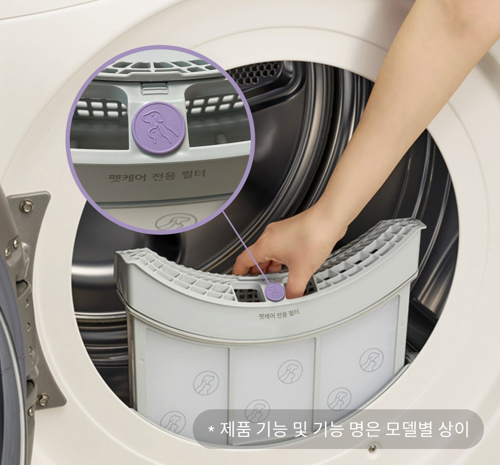
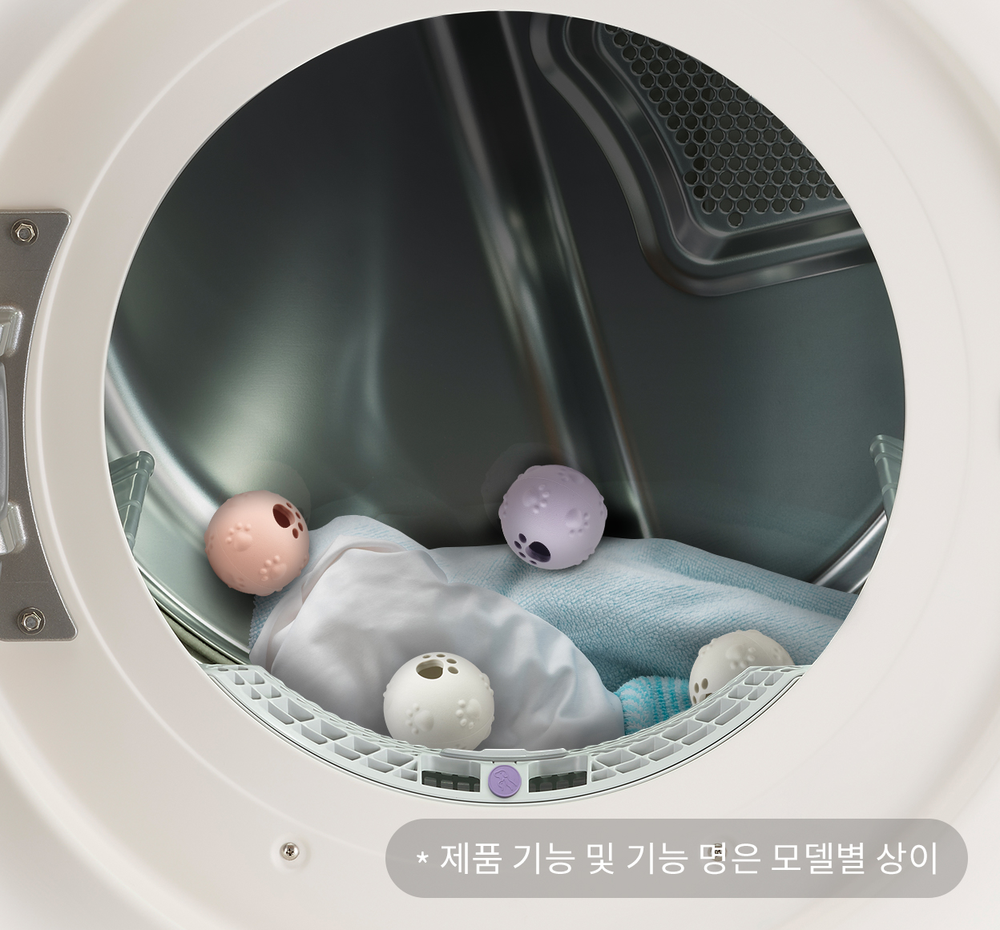
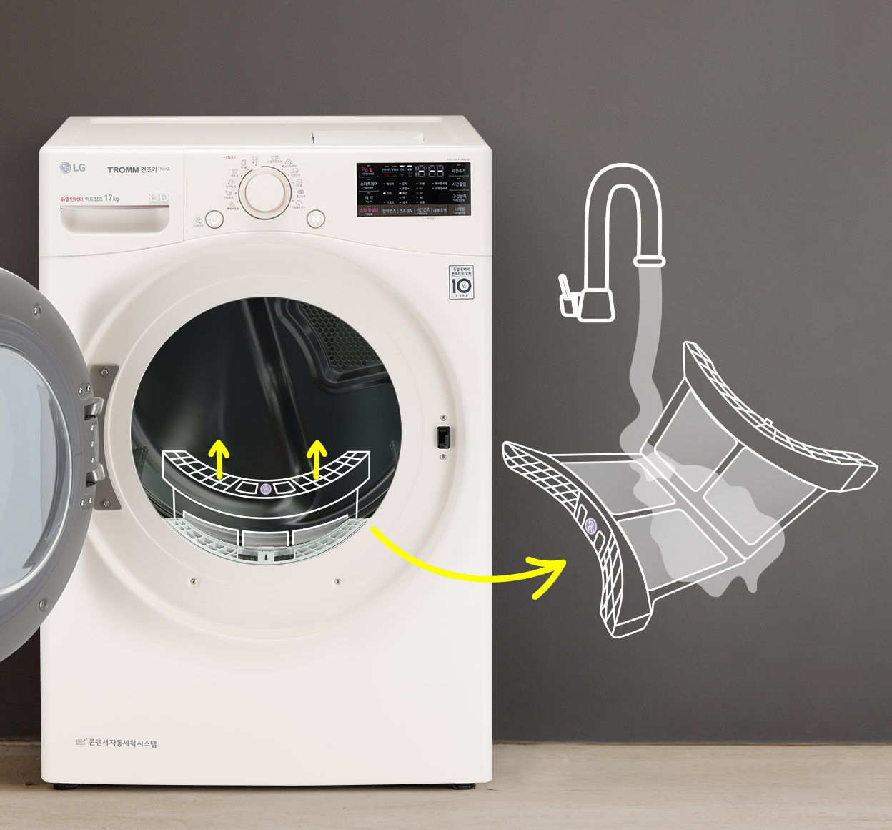

펫건조기


보다 더 스마트한 일상
LG ThinQ의 시작

보다 더 스마트한 일상, LG ThinQ
씽큐는 사람과 가전을 AI 기술로 연결하여 더 편리하고 놀라운 일상을 만드는 LG전자의 스마트 홈 플랫폼입니다.
* 본 콘텐츠는 ThinQ 앱의 콘텐츠입니다.
반려견, 반려묘 한번 안았는데 옷에 털이 가득하고 털갈이 시즌엔 검은색 옷은 엄두도 못 낸 반려 집사님들 계시죠?
털을 떼어내느라 돌돌이를 사용하거나, 아예 털 날림이 적도록
반려동물 미용을 하시는 분들도 계시더라고요.
반려동물은 사랑스럽지만 털 관리는 쉽지 않은 게 사실인데요.
반려동물의 털과 냄새 관리가 가능한 펫케어 건조기는
옷에 붙은 털을 일일이 떼어내지 않고도 편하게 의류 관리를 할 수 있어요.
펫케어 건조기 사용에 필수인 전용 필터와 건조볼로 의류 관리하는 방법을 알려드릴게요.

필수 1.
펫 케어 전용 필터 장착
옷감에서 털어낸 미세한 털까지 채집해야 옷 관리가 잘 되겠죠. 그러기 위해서는 반드시 제공되는 펫케어 전용 필터를 장착해 사용해야 해요.
펫케어 전용 필터는 내부에 펫필터가 추가되어 있고 외부필터는 좀 더 촘촘한 그물망으로 반려동물의 털이 날리지 않도록 꼼꼼히 채집해 줘요.

필수 2.
건조볼 사용
펫케어 건조볼을 사용하면 옷감과 건조볼이 서로 부딪히면서 옷에 붙은 털들이 떨어지게 돼요.
'펫케어 건조' 코스가 드럼통의 회전속도를 조절하여 건조볼의 유동 반경을 넓혀주니 같이 사용하면 털 제거가 쉽겠죠?

필수 3.
펫케어 전용 필터 청소 필수
펫케어 전용 필터는 사용할 때마다 청소가 필요해요. 뭉쳐 있는 먼지와 반려동물의 털을 흐르는 물에 깨끗하게 씻고 그늘에 말려주세요.
필터가 잘 관리되지 않으면 먼지 채집 및 건조 성능이 달라질 수 있어요. 반려동물과 함께하는 깨끗한 건조 생활을 위해 꼭 관리해 주세요.
냄새 제거와 살균까지 상쾌하게
연구에 따르면 국내에서 반려동물에 의한 알레르기 경험이 반려견 25%, 반려묘 35%로 나왔다고 하는데요. 트루스팀이 의류에 밴 배변 냄새, 체취를 99% 이상 제거하고, 개, 고양이 알레르겐 대표 물질을 99.99% 이상 줄여줘요. 단, 건조기는 반드시 세탁 후에 사용해야 하는 사실은 잊지 마세요.
펫케어 건조기로 털과 냄새를 제거하고 알러지 유발물질인 개, 고양이 알레르겐 대표 물질까지 줄여 상쾌한 펫라이프를 만들어보세요!


LG ThinQ
ThinQ 하나로 더 좋아지는 일상
일상을 더 편하고 스마트하게 만들어주는 씽큐 앱을 지금 바로 만나보세요.
- #건조기
- #펫케어
- #펫케어건조
- #건조기기능
- #3중안심필터
- #반려동물
- #알러지
출처 및 고지사항
고지사항
* 펫케어 건조
- 인터텍(Intertek) 시험 결과, 자사가 제시한 기준으로 펫케어 건조 코스에 서, 코스 행정 전, 후의 면적비교 결과 평균 94.3% 제거
- 상기 시험결과는 사용환경, 실사용 조건 등에 따라 차이가 있을 수 있습니다.
- 펫케어 건조 코스의 권장하는 의류는 반려인의 면 소재 의류나 반려동물 전 용의류이며, 펫케어 액세서리를 사용하면 털 제거, 알레르겐 저감, 발취에 도 움을 줍니다.
- 반드시 사용 코스별 알맞은 필터를 구분하여 사용하세요. 펫케어 건조 코스 에서는 펫케어 3중 안심필터를 사용하고, 그 외 코스에서는 일반 필터를 사용 하세요.
- 펫케어건조 코스 사용 시 일반필터를 사용하면 털/먼지 채집성능이 떨어질 수 있으며, 펫케어 건조 외 일반 코스 사용 시 펫케어 전용필터를 사용하면 건 조시간이 다소 길어질 수 있습니다.
- 덜 제거, 알레르겐 저감,탈취 성능은 사용 환경, 실사용조건 등에 따라 차이 가 있을 수 있습니다.
* 펫케어 탈취
- 태성 환경 연구소 시험 결과, KS K 0891 시험법 준용, 펫케어 건조코스로 국제규격부하 1.5kg 기준 직물의 15cm x 15cm 면적에 흡착시킨 냄새 농도 를 비교하여 탈취 성능 평균 계산 시 반려동물의 체취, 배변 등 관련 있는 냄 새성분인 이소발레르알데이드, 메틸 메르캅탄, 트리메틸아민, 아세틱 에시드 99% 이상 제거함
- 상기 시험결과는 사용환경, 실사용 조건 등에 따라 차이가 있을 수 있습니다.
* 펫케어 살균
- Environmental Allergens INFO& CARE 시험결과, Sandwich ELISA 알레르겐 측정 시험법으로 펫케어건조 코스 기준 개, 고양이 알레르겐 99.99% 이상 저감
- 개 알레르겐 대표물질은 Can f 1(Canis familiaris), 고양이 알레르겐 대 표물질은 Fel d 1(Felis domesticus) 로 시험한 결과임
- 상기 시험결과는 사용환경, 실사용 조건 등에 따라 차이가 있을 수 있습니다.
* 출처
- 반려견 키우는 4명 중 1명 '알레르기'경험...1위 '치와와, 연합뉴스 [웹사이트. (2018년 2월 8일) >